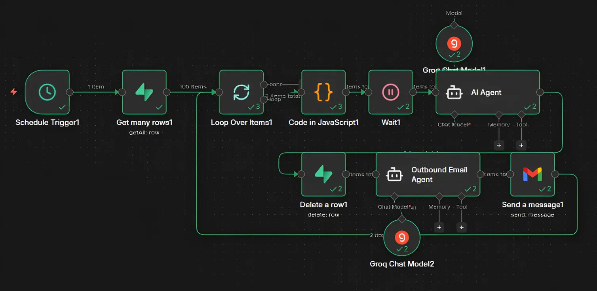

Sistema de prospecção que encontra empresas, extrai contatos e dispara e-mails personalizados — do zero até o envio, sem intervenção manual.
Demonstração
Como funciona
Parte 2
Com os leads no banco, o n8n assume. Todo dia às 6h ele acorda sozinho, pega os contatos pendentes e dispara os e-mails — sem ninguém precisar apertar nada.
